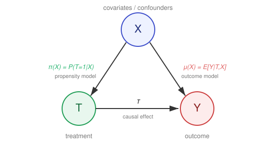

Direct Adjustment#
Estimating \(\mathbb{E}[Y(t)]\) by modelling the outcome, the treatment, or both.
Direct-adjustment estimators recover the average treatment effect by explicitly modelling the relationship between covariates \(X\), treatment \(T\), and outcome \(Y\). They span a spectrum: from a single outcome model (G-computation), through propensity-score methods that model treatment assignment (matching and inverse-probability weighting), to estimators that combine an outcome model with a propensity model for robustness (AIPW, TMLE), and orthogonal machine-learning estimators that remain valid under flexible nuisance models (Double Machine Learning). All share the same identification backbone - unconfoundedness given \(X\) and Overlap (Common Support) - and target \(\mathbb{E}[Y(t)]\) by adjustment alone. The figure below shows the common causal structure these estimators exploit.
{kind=link}

Fig. 12 Causal structure underlying adjustment-based regression estimators. The covariates \(X\) confound the treatment–outcome relationship through the propensity model \(\pi(X) = P(T = 1 \mid X)\) and the outcome model \(\mu(X) = \mathbb{E}[Y \mid T, X]\). Doubly robust estimators combine both to estimate the causal effect \(\tau\).#
Outcome Regression and G-computation#
The simplest regression adjustment fits a single outcome model \(\hat{\mu}(t, x) = \mathbb{E}[Y \mid T = t, X = x]\) and contrasts its predictions under treatment and control, averaged over the covariate distribution. This is the parametric g-formula of Robins (1986) (see Hernán & Robins (2020) for a modern treatment), and it serves as the conceptual baseline on which the doubly robust and orthogonal estimators below build.
Algorithm 4 (G-computation (Outcome Regression))
Inputs Data \(D = \{X, T, Y\}\), ML learner \(\mathcal{L}_Y\) (for outcome)
Outputs Estimated ATE \(\hat{\tau}\)
Fit outcome model \(\hat{\mu}(t, x) = \mathcal{L}_Y(Y \sim T, X)\) on \(D\)
For every observation \(i\):
Predict counterfactual outcomes \(\hat{\mu}(1, x^{(i)})\) and \(\hat{\mu}(0, x^{(i)})\)
Average the contrast: \(\hat{\tau} = \frac{1}{n}\sum_{i=1}^{n}\left[\hat{\mu}(1, x^{(i)}) - \hat{\mu}(0, x^{(i)})\right]\)
Return estimated treatment effect \(\hat{\tau}\)
G-computation is consistent only if the outcome model is correctly specified. Because a misspecified \(\hat{\mu}\) propagates directly into the estimate, it motivates the doubly robust estimators that add a second line of defence through the propensity score.
Propensity Score Definition#
The probability of receiving treatment \(T\) given a set of observed covariates \(X\), defined as:
It reduces high-dimensional control variables into a single score in order to achieve covariate balance.
Overlap (Common Support)#
Propensity score methods are only valid where treated and control units are actually comparable. This requirement is the empirical counterpart of the Assumption 3: For every covariate profile \(x\), both treatment arms must have a positive (non-zero) probability of being observed,
The range of covariates where this holds - where the propensity score distributions of the treated (\(T=1\)) and control (\(T=0\)) groups overlap - is called the region of common support (or overlap). When \(\pi(x)\) approaches \(0\) or \(1\) for some covariate profile, there are no comparable units in the opposite group: matching finds no partner to pair with, and inverse-probability weights explode. In practice, overlap is diagnosed by inspecting the distribution of the estimated scores \(\hat{\pi}(x)\) in each treatment group.
A lack of overlap can stem from two qualitatively different sources, and the distinction dictates the appropriate response (Hernán & Robins, 2020, Ch. 3; Crump et al., 2009):
Structural zeros - the covariate profile has no theoretical chance of appearing in one arm, e.g. an insurance programme with a hard eligibility rule. The causal effect is not identified for those units, and no matching or weighting can recover it; the target population must be redefined to the region where both arms are possible.
Empirical near-violations - overlap holds in the population, but finite-sample sparsity leaves some regions thinly populated. Overlap weighting, trimming, or restricting to the estimated common-support region (Crump et al., 2009) stabilise estimation here.
Propensity Score Matching#
Matching focuses on creating “apples-to-apples” comparisons by pairing treated units with similar control units. This algorithm typically estimates the Average Treatment Effect on the Treated (ATT).
Algorithm 5 (Propensity Score Matching)
Inputs Data \(D\) with covariates \(X\), treatment \(T\), and outcome \(Y\); Caliper \(\delta\)
Outputs Estimated ATT \(\hat{\tau}_{ATT}\)
Estimate Propensity Scores
Train model \(P(T = 1 \mid X)\) (e.g., Logistic Regression) on \(D\)
Compute \(\hat{\pi}(x_i)\) for all individuals \(i\) (Probability of treatment)
Match Units
Split \(D\) into Treated group \(\mathcal{T}\) and Control group \(\mathcal{T}_0\)
Initialize empty matched set \(\mathcal{M} = \emptyset\)
For each unit \(i \in \mathcal{T}\):
Find unit \(j \in \mathcal{T}_0\) that minimizes \(|\hat{\pi}(x_i) - \hat{\pi}(x_j)|\)
If \(|\hat{\pi}(x_i) - \hat{\pi}(x_j)| \leq \delta\): (Apply caliper distance)
Add pair \((i, j)\) to \(\mathcal{M}\)
Optional: Remove \(j\) from \(\mathcal{T}_0\) (Matching without replacement)
Estimate Effect
\(\hat{\tau}_{ATT} = \frac{1}{|\mathcal{M}|} \sum_{(i,j) \in \mathcal{M}} (Y_i - Y_j)\)
Return \(\hat{\tau}_{ATT}\)
Inverse Propensity Score Weighting#
Weighting uses Inverse Probability Weighting (IPW) to create a “pseudo-population” where the treatment is independent of measured covariates. This approach is often used to estimate the Average Treatment Effect (ATE) for the entire population. This independence, however, is achieved only if the propensity model \(\hat{\pi}(x)\) is correctly specified (and overlap holds): IPW is singly robust - consistent if and only if \(\hat{\pi}(x)\) is correct. Under a misspecified propensity model (e.g. a logistic fit omitting a relevant covariate or non-linear interaction) the reweighted sample does not balance \(X\), and the ATE estimate is biased - sometimes severely (Kang & Schafer, 2007; Lunceford & Davidian, 2004, Thm. 1). Doubly robust estimators (AIPW) relax this by staying consistent if either the propensity or the outcome model is correct.
Algorithm 6 (Propensity Score Weighting)
Inputs Data \(D\) with covariates \(X\), treatment \(T\), and outcome \(Y\)
Outputs Estimated ATE \(\hat{\tau}_{ATE}\)
Estimate Propensity Scores
Train model \(P(T = 1 \mid X)\) to obtain \(\hat{\pi}(x_i)\)
Optional: Clip scores (e.g., \([0.05, 0.95]\)) to avoid extreme weights
Calculate IPW Weights
For each unit \(i\) in \(D\):
If \(T_i = 1\): \(w_i = \frac{1}{\hat{\pi}(x_i)}\) (Weight for Treated)
Else: \(w_i = \frac{1}{1 - \hat{\pi}(x_i)}\) (Weight for Control)
Estimate Effect
\(\hat{Y}_1 = \frac{\sum T_i Y_i w_i}{\sum T_i w_i}\) (Weighted mean for Treated)
\(\hat{Y}_0 = \frac{\sum (1-T_i) Y_i w_i}{\sum (1-T_i) w_i}\) (Weighted mean for Control)
\(\hat{\tau}_{ATE} = \hat{Y}_1 - \hat{Y}_0\)
Return \(\hat{\tau}_{ATE}\)
Proof. We want to briefly prove that weighting the observed outcomes \(Y\) by the inverse of the propensity score \(\pi(X)\) for the treated group recovers the true (factual) mean \(\mathbb{E}[Y(1)]\).
We first condition on the baseline covariates \(X\), and then take the outer expectation over the distribution of \(X\):
By consistency, when \(T = 1\), the observed outcome \(Y\) is identical to \(Y(1)\). When \(T = 0\), the term \(T Y\) is 0. Thus, we can substitute \(T Y\) with \(T Y(1)\):
Because treatment assignment \(T\) is independent of the potential outcome \(Y(1)\) once we condition on \(X\), the joint expectation factors into the product of their individual conditional expectations:
By definition, the conditional expectation of a binary indicator variable \(T\) given \(X\) is its probability of occurring, which is the propensity score \(\pi(X)\):
Substituting \(\pi(X)\) back into our equation:
Using the Law of Iterated Expectations again, the inner expectation collapses, leaving the marginal expectation:
Interactive Comparison: Matching vs. Weighting#
The interactive figure below applies both methods to a single simulated dataset with covariates \(X\), treatment \(T\), and outcome \(Y\), where the true treatment effect is known. Use it to build intuition for how the two estimators behave:
Confounding strength - increase it to make the treated and control groups less alike. Watch the propensity score distributions pull apart and the region of Overlap (Common Support) shrink.
Matching caliper \(\delta\) - widen or tighten the maximum propensity gap allowed within a pair, and see how many treated units get matched versus discarded.
New sample - redraw the data to see the sampling variability of each estimate.
The panels let you compare, on the same data, (1) propensity score overlap, (2) the matched pairs formed by Propensity Score Matching (PSM), and (3) the inverse-probability-weighted points used by IPTW. The summary cards contrast the naïve difference in means against the PSM estimate of the ATT (\(\hat{\tau}_{ATT}\)) and the IPTW estimate of the ATE (\(\hat{\tau}_{ATE}\)), each benchmarked against its own target - the PSM estimate against the true ATT, the IPTW estimate against the true ATE. Because assignment is positively confounded, the treated are drawn from higher-effect strata, so the true ATT exceeds the true ATE; benchmarking PSM against the ATE would wrongly make it look upward-biased as confounding grows.
The two sliders set the green terms below - the confounding strength \(\beta\) in the treatment-assignment model and the matching caliper \(\delta\) in the pairing rule:
The complete model is given by:
Structural Equation Models
The four equations above are an instance of a Structural Equation Model (SEM). Each equation assigns a cause to a variable: \(X_1\) and \(X_2\) are exogenous inputs, \(T\) is determined by the covariates through the propensity score, and \(Y\) is determined by \(T\), the covariates, and noise. Crucially, the equation for \(Y\) encodes the causal mechanism - changing \(T\) from 0 to 1 shifts \(Y\) by \((2 + 0.2X_1 - 0.1X_2)\), regardless of how \(T\) came to take that value. This is what Pearl’s do-calculus notation distinguishes as \(\Pr(Y \mid do(T{=}1))\) versus the purely observational \(\Pr(Y \mid T{=}1)\).
In an SEM, the treatment effect heterogeneity is explicit: the coefficient on \(T\) depends on \(X_1\) and \(X_2\), so the ATT and ATE differ whenever the treated and untreated groups occupy different parts of the covariate space - exactly the situation the confounding-strength slider demonstrates.
Doubly Robust Estimation: AIPW and TMLE#
Doubly robust estimators combine the outcome model \(\hat{\mu}(t, x)\) with the propensity model \(\hat{\pi}(x)\) so that the estimate is consistent if either model is correctly specified - a property that single-model approaches lack. The Augmented Inverse Propensity Weighting (AIPW) estimator of Robins, Rotnitzky & Zhao (1994) augments the G-computation estimate with an inverse-propensity-weighted residual correction; Bang & Robins (2005) developed the framework for causal inference, and van der Laan & Rubin (2006) introduced Targeted Maximum Likelihood Estimation (TMLE) as a substitution-based alternative with the same robustness guarantee. DML (next section) is essentially AIPW equipped with Neyman-orthogonality and cross-fitting.
Algorithm 7 (Augmented Inverse Propensity Weighting (AIPW))
Inputs Data \(D = \{X, T, Y\}\), ML learners \(\mathcal{L}_Y\) (outcome), \(\mathcal{L}_T\) (treatment)
Outputs Doubly robust ATE estimate \(\hat{\tau}\)
Fit nuisance models (with cross-fitting): outcome \(\hat{\mu}(t, x) = \mathcal{L}_Y(Y \sim T, X)\) and propensity \(\hat{\pi}(x) = \mathcal{L}_T(T \sim X)\)
For every observation \(i\), form the doubly robust score (G-computation plus IPW residual correction)
\[\hat{\psi}^{(i)} = \hat{\mu}(1, x^{(i)}) - \hat{\mu}(0, x^{(i)}) + \frac{T^{(i)}\,(Y^{(i)} - \hat{\mu}(1, x^{(i)}))}{\hat{\pi}(x^{(i)})} - \frac{(1 - T^{(i)})\,(Y^{(i)} - \hat{\mu}(0, x^{(i)}))}{1 - \hat{\pi}(x^{(i)})}\]Average the scores: \(\hat{\tau} = \frac{1}{n}\sum_{i=1}^{n}\hat{\psi}^{(i)}\)
Return estimated treatment effect \(\hat{\tau}\) (consistent if either \(\hat{\mu}\) or \(\hat{\pi}\) is correct)
Neyman Orthogonality of the AIPW Score#
The AIPW estimator averages the doubly robust scores \(\hat{\psi}^{(i)}\) defined in Step 2 of Algorithm 7. In expectation, the score is a moment condition \(\mathbb{E}[\psi(\theta_0, \eta_0)] = 0\), where
with nuisance parameter \(\eta = (\mu, \pi)\), where \(\mu(t,x) = \mathbb{E}[Y \mid T=t, X=x]\) and \(\pi(x) = P(T=1 \mid X=x)\). The score is Neyman orthogonal at \((\theta_0, \eta_0)\) if the derivative of the expected score with respect to \(\eta\), evaluated at the truth, vanishes in every direction:
Since \(\eta = (\mu, \pi)\), we verify this separately for each component.
Proof. We show that both \(\partial_\mu\,\mathbb{E}[\psi][\delta_\mu] = 0\) and \(\partial_\pi\,\mathbb{E}[\psi][\delta_\pi] = 0\) at the truth \(\eta_0 = (\mu, \pi)\), for arbitrary directions \(\delta_\mu = \tilde{\mu} - \mu\) and \(\delta_\pi = \tilde{\pi} - \pi\).
Part 1: Derivative with respect to \(\mu\).
The derivative of \(\mathbb{E}[\psi]\) in direction \(\delta_\mu\) is:
Apply the law of iterated expectations, conditioning on \(X\):
Since \(\mathbb{E}[T \mid X] = \pi(X)\) and \(\mathbb{E}[1-T \mid X] = 1-\pi(X)\) both fractions equal one, so:
Part 2: Derivative with respect to \(\pi\).
The derivative of \(\mathbb{E}[\psi]\) in direction \(\delta_\pi\) is obtained by replacing \(\pi\) with \(\pi + t\,\delta_\pi\) and differentiating at \(t=0\), using \(\frac{d}{dt}\frac{1}{\pi + t\delta_\pi}\big|_{t=0} = -\frac{\delta_\pi}{\pi^2}\):
Apply iterated expectations to the first term, conditioning on \(X\):
Under exchangeability, \(\mathbb{E}[TY \mid X] = \pi(X)\mu(1,X)\) and \(\mathbb{E}[T \mid X] = \pi(X)\), so:
and the first term vanishes. By the identical argument applied to \(T=0\), using \(\mathbb{E}[(1-T)Y \mid X] = (1-\pi(X))\,\mu(0,X)\) and \(\mathbb{E}[1-T \mid X] = 1-\pi(X)\):
and the second term also vanishes:
Conclusion.
Since both partial derivatives vanish at the truth for all directions \(\delta_\mu\) and \(\delta_\pi\), the AIPW score is Neyman orthogonal. Consequently, the bias of \(\hat{\tau} = \frac{1}{n}\sum_{i=1}^{n}\hat{\psi}^{(i)}\) satisfies
vanishing whenever either \(\hat{\mu} \rightarrow \mu\) or \(\hat{\pi} \rightarrow \pi\) in probability, which is the double robustness stated in Step 4 of Algorithm 7.
Algorithm 8 (Targeted Maximum Likelihood Estimation (TMLE))
Inputs Data \(D = \{X, T, Y\}\), ML learners \(\mathcal{L}_Y\) (outcome), \(\mathcal{L}_T\) (treatment)
Outputs Doubly robust ATE estimate \(\hat{\tau}\)
Fit initial outcome model \(\hat{\mu}^0(t, x) = \mathcal{L}_Y(Y \sim T, X)\) and propensity \(\hat{\pi}(x) = \mathcal{L}_T(T \sim X)\)
Compute the clever covariate \(H^{(i)} = \frac{T^{(i)}}{\hat{\pi}(x^{(i)})} - \frac{1 - T^{(i)}}{1 - \hat{\pi}(x^{(i)})}\)
Targeting step: fit a one-parameter logistic fluctuation \(\hat{\varepsilon}\) by regressing \(Y\) on \(H\) with offset \(\text{logit}\,\hat{\mu}^0\), giving the updated model \(\hat{\mu}^\star(t, x)\) (valid for \(Y \in [0,1]\); see the note below for continuous outcomes)
Plug the targeted model into G-computation: \(\hat{\tau} = \frac{1}{n}\sum_{i=1}^{n}\left[\hat{\mu}^\star(1, x^{(i)}) - \hat{\mu}^\star(0, x^{(i)})\right]\)
Return estimated treatment effect \(\hat{\tau}\)
Note
Outcome type matters - read before applying TMLE to loss data. The targeting step above uses a logistic fluctuation (offset \(\text{logit}\,\hat{\mu}^0\), clever covariate \(H\)), which is only valid when the outcome is binary or bounded in \([0,1]\). For unbounded continuous outcomes a different fluctuation family is required - a Gaussian fluctuation with the identity link (van der Laan & Rubin, 2006) - otherwise the targeting step is misspecified and the resulting \(\hat{\tau}\) is invalid.
In non-life actuarial work this is the usual case, not an edge case: the primary outcomes - claim amounts, loss ratios, and claim counts - are continuous or count-valued and unbounded, not \(\{0,1\}\). An actuary who applies the logistic formulation above directly to a loss amount is implementing an incorrect targeting step. Two practical routes:
Bounded continuous outcomes (e.g. loss ratios in \([0,1]\), or any outcome rescaled to \([0,1]\) via \(\tilde{Y} = (Y - a)/(b - a)\) and back-transformed): the logistic fluctuation applies directly after rescaling (Gruber & van der Laan, 2010).
Unbounded outcomes (claim severities, aggregate losses): use the Gaussian/identity-link fluctuation, or a count-appropriate family for frequencies.
In practice, prefer a maintained implementation such as the R package tmle, which selects the correct fluctuation family for binary, bounded-continuous, and continuous outcomes automatically.
Double Machine Learning (DML)#
The DML estimator of Chernozhukov et al. (2018) makes the doubly robust idea robust to flexible, slowly-converging machine-learning nuisance models. For a binary or continuous treatment it builds on the partially linear model (PLM) \(Y = \tau T + g(X) + \varepsilon\), whose residualize-then-regress solution is Robinson’s estimator (Robinson, 1988). By partialling out the covariate effect from both \(Y\) and \(T\) before estimating \(\tau\), the resulting moment condition is Neyman-orthogonal, so first-stage estimation error has only a second-order effect on \(\hat{\tau}\).
Algorithm 9 (Double Machine Learning)
Inputs Data \(D = \{X, T, Y\}\), ML learners \(\mathcal{L}_Y\) (for outcome), \(\mathcal{L}_T\) (for treatment)
Outputs Estimated causal effect \(\hat{\tau}\)
Split data \(D\) into two disjoint sets: \(D_{train}\) and \(D_{eval}\) (Cross-fitting/Honesty)
Outcome Residualization
Train model \(\hat{\mu}(X) = \mathcal{L}_Y(Y \sim X)\) on \(D_{train}\) (Predict \(Y\) using covariates only)
Compute residuals \(\tilde{Y} = Y - \hat{\mu}(X)\) on \(D_{eval}\)
Treatment Residualization
Train model \(\hat{\pi}(X) = \mathcal{L}_T(T \sim X)\) on \(D_{train}\) (Estimate the treatment conditional mean \(\pi(X) = \mathbb{E}[T \mid X]\); for binary \(T\) this coincides with the propensity score \(\mathbb{P}(T=1 \mid X)\))
Compute residuals \(\tilde{T} = T - \hat{\pi}(X)\) on \(D_{eval}\)
Causal Estimation
Regress outcome residuals on treatment residuals: \(\tilde{Y} = \tau \tilde{T} + \varepsilon\)
Note: This identifies the effect using only the “exogenous” variation in \(T\)
Return estimated treatment effect \(\hat{\tau}\)
Note
What the partially linear model actually targets. The PLM \(Y = \tau T + g(X) + \varepsilon\) treats \(\tau\) as a single constant - an implicit homogeneous-effects assumption. When the true effect is heterogeneous, \(\tau(X)\), Robinson’s residual-on-residual regression does not return the standard ATE \(= \mathbb{E}[\tau(X)]\) but the propensity-overlap-weighted average
with \(\pi(X) = \mathbb{E}[T \mid X]\) the propensity score, which over-weights the region of good overlap (\(\pi \approx \tfrac12\)) and under-weights the propensity tails. \(\tau^*\) equals the ATE only when effects are homogeneous or \(\pi(X)\) is constant (an RCT) - neither holds in confounded insurance data. To target \(\mathbb{E}[\tau(X)]\) under heterogeneity, use the interactive model \(Y = \tau(X)T + g(X) + \varepsilon\) with an AIPW/doubly robust score, or average the CATEs from the meta-learners and causal forests in Heterogeneous Treatment Effects (Chernozhukov et al., 2018, Sec. 2 vs. 4). Mixing a PLM-DML “ATE” with averaged causal-forest CATEs can therefore yield inconsistent numbers.